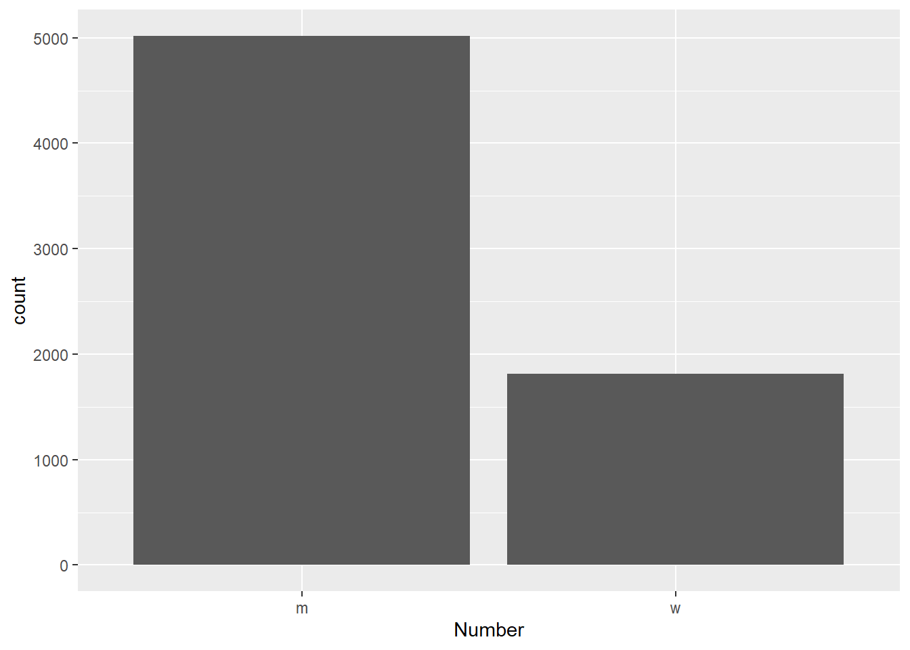

This script checks assigns professor names as male or female. Because there are no self-reports of gender in the Narcis database, we infer a professor’s gender from the first name filed in the database using Genderize.io API and combine it with the data from the Dutch database of first names (Voornamenbank).
Bear in mind that our inference is based on the “roepnaam”, i.e., “calling name”, which, in the Netherlands, does not have to match one’s name given at birth. Therefore, we can assume that, in many cases, professors could have adjusted their name in the database from their name given at birth to the “roepnaam” that best reflected their gender identity. We, then, base our inference on this entry.
Load the libraries that we need:
Connect to the postgres database. Use own credentials.
port <- 5432
user <- "postgres"
password <- "dutchmediaprofssql"
database_name <- "postgres"
con <- dbConnect(Postgres(),
dbname= database_name,
port = port,
user = user,
password = password)
con # Checks connection is workingLoad the professor profiles:
load("raw_data/media_profs_profiles.rda")
profs <- read_csv("raw_data/dutch_profs_urls.csv")
# merge the profs with their ORCIDs
colnames(profs)[c(1,7)] <- c("id", "profile_id")
profs_full <- merge(profs,
metadf[, c(1:4, 361)],
by = "profile_id")
# fix some first names that were cut short by mistake
profs_full$first[which(profs_full$first == "wilfrie")] <- "wilfried"
profs_full$first[which(profs_full$first == "j")] <- "jan-willem"
profs_full$first[which(profs_full$first == "d")] <- "drona"
profs_full$first[which(profs_full$first == "l")] <- "luc"
profs_full$first[which(profs_full$first == "a")] <- "anna"
profs_full$first[which(profs_full$full == "vermunt, tina")] <- "tina"
profs_full$first[which(profs_full$full == "steennis, tom")] <- "tom"
profs_full$first[which(profs_full$first == "m")] <- "martijn"
profs_full$first[which(profs_full$first == "wouter\\")] <- "wouter"
profs_full$first[which(profs_full$first == "geert-j")] <- "geert-jan"
profs_full$first[which(profs_full$first == "jean-sébastie")] <- "jean-sébastien"
profs_full$first[which(profs_full$first == "jean-pier")] <- "jean-pierre"
profs_full$first[which(profs_full$first == "jean-bern")] <- "jean-bernard"
profs_full$first[which(profs_full$first == "anne-ma")] <- "anne-marie"
profs_full$first[which(profs_full$first == "peter-arn")] <- "peter-arno"
profs_full$first[which(profs_full$first == "frans-wille")] <- "frans-willem"
profs_full$first[which(profs_full$first == "jan-diede")] <- "jan-diederik"
profs_full$first[which(profs_full$first == "peter-pau")] <- "peter-paul"
profs_full$first[which(profs_full$first == "willem-ja")] <- "willem-jan"
profs_full$first[which(profs_full$first == "marie-colet")] <- "marie-colette"
profs_full$first[which(profs_full$first == "marie-jos")] <- "marie-josé"
profs_full$first[which(profs_full$first == "jean-sébastie")] <- "jean-sébastien"
profs_full$first[which(profs_full$first == "diederi")] <- "diederik"
profs_full$first[which(profs_full$first == "britas kl")] <- "britas klemens"
profs_full$first[which(profs_full$first == "gert-will")] <- "gert-willem"
profs_full$first[which(profs_full$first == "jean-christop")] <- "jean-christophe"
profs_full$first[which(profs_full$first == "genseri")] <- "genserik"
profs_full$first[which(profs_full$first == "marie-jea")] <- "marie-jeanne"
profs_full$first[which(profs_full$full == "posthuma, danielle")] <- "danielle"
profs_full$first[which(profs_full$first == "huppertz")] <- "thom"
# save the corrected data
saveRDS(profs_full, "processed_data/narcis_prof_info_fixed.RDS")# fill in own api key
genderize_api_key <- ''
# list of names
names <- unique(profs_full$first)
prof_name_gender <- data.frame(matrix(NA, nrow = 0, ncol = 4))
for (i in 1:length(names)){
name <- names[i]
output <- genderize_io_function(name,
api_key = genderize_api_key,
country_id = "NL")
prof_name_gender <- rbind(prof_name_gender,
output)
print(paste("done with", i, "out of", length(names)))
}
saveRDS(genderize_data , "processed_data/prof_gender_genderize.RDS")Use the same name list to get the data from the Dutch register by calling the Nederlandes Voornamenbank:
voornamenbank_data <- data.frame(matrix(NA, nrow = 0, ncol = 5))
for (i in 1:length(names)) {
name <- names[i]
url_call <- paste0("https://nvb.meertens.knaw.nl/naam/is/", name)
name_webpage <- NA
try(name_webpage <- read_html(url_call))
# extract name frequency table and gender info
# if anything was retrieved
if (!is.na(name_webpage)){
if (length(name_webpage %>% html_table()) > 0) { # if there is info in a table
table <- name_webpage %>% html_table() # extract a html_table
table[[1]][table[[1]]=="--"] <- "0"
# find men, with first name and middle name counts
gender_m_first <- as.numeric(table[[1]]$X3[2])
gender_m_volg <- as.numeric(table[[1]]$X3[3])
# find women, with first name and middle name counts
gender_w_first <- as.numeric(table[[1]]$X3[6])
gender_w_volg <- as.numeric(table[[1]]$X3[7])
# build a row
row <- cbind.data.frame(name,
gender_m_first,
gender_m_volg,
gender_w_first,
gender_w_volg)
# bind to the overall dataframe
voornamenbank_data <- rbind(voornamenbank_data,
row)
print(paste("done with", i, "out of", length(names)))
# wait for 35 sec to be kind to the website
Sys.sleep(35)
}
}
}Save this:
saveRDS(voornamenbank_data, "processed_data/prof_gender_voornamenbank.RDS")genderize_data <- readRDS("processed_data/prof_gender_genderize.RDS")
voornamenbank_data <- readRDS("processed_data/prof_gender_voornamenbank.RDS")For the voornamenbank data, assign the gender based on a majority rule. First, focus only on the given name (first name)
voornamenbank_data <- voornamenbank_data[c("name", "gender_m_first", "gender_w_first")]
# share men
voornamenbank_data$share_m <- round(voornamenbank_data$gender_m_first / (voornamenbank_data$gender_m_first + voornamenbank_data$gender_w_first), 2)
# share women
voornamenbank_data$share_w <- round(voornamenbank_data$gender_w_first / (voornamenbank_data$gender_m_first + voornamenbank_data$gender_w_first), 2)
# classify based on the simple majority rule
# select those in the range 0.4 - 0.6 as ambiguous
voornamenbank_data$gender <- ifelse(voornamenbank_data$share_m > 0.5, "m",
ifelse(voornamenbank_data$share_w > 0.5, "w",
"amb"))
# we can then check the ambiguous names manually for the 33 names
table(voornamenbank_data$gender)Manual check for the ambiguous names and filter out empty and typos:
voornamenbank_data$gender[which(voornamenbank_data$name == "rez")] <- "m"
voornamenbank_data$gender[which(voornamenbank_data$name == "marijk")] <- "w"
voornamenbank_data$gender[which(voornamenbank_data$name == "afshin")] <- "m"
voornamenbank_data$gender[which(voornamenbank_data$name == "uli")] <- "m"
voornamenbank_data$gender[which(voornamenbank_data$name == "keita")] <- "m"
voornamenbank_data$gender[which(voornamenbank_data$name == "liviu")] <- "m"
voornamenbank_data$gender[which(voornamenbank_data$name == "evgeny")] <- "m"
voornamenbank_data$gender[which(voornamenbank_data$name == "andrey")] <- "m"
voornamenbank_data$gender[which(voornamenbank_data$name == "joti")] <- "w"
voornamenbank_data$gender[which(voornamenbank_data$name == "aurelien")] <- "m"
voornamenbank_data$gender[which(voornamenbank_data$name == "cathal")] <- "m"
voornamenbank_data$gender[which(voornamenbank_data$name == "jol")] <- "m"
voornamenbank_data$gender[which(voornamenbank_data$name == "anupam")] <- "m"
voornamenbank_data$gender[which(voornamenbank_data$name == "uta")] <- "w"
voornamenbank_data <- filter(voornamenbank_data,
!is.na(name))
voornamenbank_data <- filter(voornamenbank_data,
name != "wilfrie")Understand the missclassification rate, which appears negligible at 0.55%:
# the share of people who might be missclassified in this manner
voornamenbank_data$missclassification <- ifelse(voornamenbank_data$gender == "m",
voornamenbank_data$share_w,
voornamenbank_data$share_m)
# total occurrences
voornamenbank_data$total_ocurrence <- voornamenbank_data$gender_m_first + voornamenbank_data$gender_w_first
# weighted missclassification
weighted.mean(voornamenbank_data$missclassification, voornamenbank_data$total_ocurrence)*100Understand the missclassification rate for the genderize data, which still appears negligible at 0.799%:
# the share of people who might be missclassified in this manner
genderize_data$missclassification <- 1 - genderize_data$probability
# total occurrences
genderize_data$total_ocurrence <- genderize_data$count
# weighted missclassification
weighted.mean(genderize_data$missclassification, genderize_data$total_ocurrence, na.rm = TRUE)*100Bind the data from genderize.io and voornamenbank:
# tidy up a bit
genderize_predictions <- genderize_data[c("name", "gender")]
colnames(genderize_predictions)[2] <- "gender_genderize"
genderize_predictions$gender_genderize <- ifelse(genderize_predictions$gender_genderize == "male", "m", "w")
voornamenbank_predictions <- voornamenbank_data[c("name", "gender")]
colnames(voornamenbank_predictions)[2] <- "gender_voornamenbank"
# combine
predictions_combined <- merge(voornamenbank_predictions,
genderize_predictions,
by = "name",
all.x = TRUE,
all.y = TRUE)
# filter out names not in the full prof list
predictions_combined <- filter(predictions_combined,
name %in% profs_full$first)Check for disagreement:
predictions_combined$agreement <- ifelse(predictions_combined$gender_voornamenbank == predictions_combined$gender_genderize,
"yes",
"no")
predictions_combined$agreement <- ifelse(is.na(predictions_combined$gender_voornamenbank)|is.na(predictions_combined$gender_genderize),
"missing",
predictions_combined$agreement)
table(predictions_combined$agreement)There is only 38 instances of disagreement, and 211 missing instances. For the missing instances, choose the one that is present. For the missing ones or disagreements, resolve manually:
predictions_combined$final_decision <- ifelse(predictions_combined$agreement == "yes",
predictions_combined$gender_voornamenbank,
ifelse(is.na(predictions_combined$gender_voornamenbank) & is.na(predictions_combined$gender_genderize),
"none",
ifelse(is.na(predictions_combined$gender_genderize),
predictions_combined$gender_voornamenbank,
ifelse(is.na(predictions_combined$gender_voornamenbank),
predictions_combined$gender_genderize,
"disagreement"))))
predictions_combined$final_decision <- ifelse(is.na(predictions_combined$final_decision), "missing", predictions_combined$final_decision)
table(predictions_combined$final_decision)Bind the final decision with the professor list based on the name:
predictions_combined <- predictions_combined[c("name", "final_decision")]
colnames(predictions_combined) <- c("first", "inferred_gender")
profs_full_gender <- merge(profs_full,
predictions_combined,
by = "first",
all.x = TRUE)
# get the missing ones
profs_full_gender_missing <- filter(profs_full_gender,
inferred_gender %in% c("none", "disagreement")| is.na(inferred_gender))For the people with missing names, manually double check (e.g., Jose can be a woman’s or a man’s name based on their country of origin). Here are the results:
full_manual <- c("seshan, kulathuiyer", "denters, bas", "bovenberg, lans",
"kemp, bas", "lagendijk, inald", "tjittes, rieme-jan",
"jacobs, haike", "van dijck, josé", "muris, jean", "bruijn, jan-antoni",
"herings, jean-jacque", "hancher, leigh", "ten cate, olle",
"katoen, joost-pieter", "eiben, gusz", "de la rosette, jean",
"kuiper, wilmad", "visscher, adrie", "stougie, leen", "grube, dirk-martin",
"kirn, hans-martin", "werker, bas", "de man, ard-pieter",
"venugopal, venkataraman", "dorsman, leen", "steketee, majone",
"herder, just", "van bavel, bas", "vroomen, jean", "van der klaauw, bas",
"hillebrand, bas", "donkers, bas", "gupta, joyeeta", "elzinga, bernet",
"peijnenburg, willie", "vossen, piek", "van de wiel, bas", "tillie, jean",
"mijatovic, velja", "kerstholt, josé", "beekhoven van den boezem, frits-joost",
"jacobs, bas", "van nieuwenhuizen, chijs", "pras, aiko", "van rijn, hedderik",
"van steensel, bas", "van den putte, bas", "geenen, rinie", "zhang, kouchi",
"ter weel, bas", "schuurmans, ymre", "rodenburg, bas", "haring, bas",
"battjes, hemme", "suh, sangwon", "chen, aoju", "bloemer, jose",
"tzankova, ianika", "moraga gonzález, jose", "de bruin, bas",
"zeitler, uli", "raaymakers, bas", "ter haar romeny, bas",
"van riel, natal", "bossier, philiep", "bloem, bas", "mulder, bela",
"rothenberg, gadi", "sibon, ody", "arts, bas", "van der bom, anske",
"manohar, srirang", "janssen, hans-gerd", "mugele, frieder", "de weijs, rolef",
"eliantonio, mariolina", "'t hoen, peter-bram", "ren, yijin", "borghans, josé",
"liu, fenrong", "murshed, mansoob", "de jong, bas", "van zelst, bas", "novoselov, kostya",
"iacob, maria-eugenia", "de leeuw, frank-erik", "mcgonagle, tarlach", "demmers, jolle",
"von stuckrad, kocku", "pineda de gyvez, jose", "zaura, egija",
"simons, tal", "bai, yuling", "bruining, hilgo", "paape, leen",
"takano, eriko", "banerjee, tamalika", "staufer, urs", "teusink, bas",
"oldenburg, bas", "sanders, josé", "plaat, aske", "van der meer, devaraj",
"pei, yutao", "bhargava, manjul", "van de meerakker, bas", "kuramae, eiko",
"zwaan, bas", "van solingen, rini", "esser, raingard", "li, yuwen",
"weusten, bas", "rasouli, soora", "jonkman, bas", "pena claros, marielos",
"van spronsen, francjan", "ye, jianting", "lowie, wander",
"lerm hayes, christa-maria", "reniers, genseri", "li, zili",
"kubat, bela", "clarkson, carrol", "scharnhorst, volkher",
"kodden, bas", "gangopadhyay, shubhashis", "ananworanich, jintanat",
"landsman-schwartz, vardit", "dayal, pratika", "simão henriques, josé",
"spruit, leen", "rietjens, bas", "broekhuizen, kleis", "kramer, eric-hans",
"zhang, xuehua", "van erp, nielka", "alphen, bas", "chen, huilin",
"koelman, vianney", "hernández, gleider", "bouma, gerd", "vries, jean paul",
"scholz, sven-bodo", "spinellis, diomidis", "wada, yoshihide",
"veersema, bas", "mikkola, mari", "saeed, peeroz", "loomans, bas",
"eriksson, britas kl", "martens, jean-bern", "huppertz, huppertz")
gender_manual <- c("m", "m", "m", "m", "m", "m", "m", "w", "m", "m", "m", "w",
"m", "m", "m", "m", "m", "m", "m", "m", "m", "m", "m", "m",
"m", "w", "m", "m", "m", "m", "m", "m", "w", "w", "m", "m",
"m", "m", "m", "w", "m", "m", "w", "m", "m", "m", "m", "m",
"m", "m", "w", "m", "m", "m", "m", "w", "w", "w", "m", "m",
"m", "m", "m", "m", "m", "m", "m", "m", "w", "m", "w", "m",
"m", "m", "m", "w", "m", "w", "w", "w", "m", "m", "m", "m",
"w", "m", "m", "w", "m", "m", "w", "w", "w", "m", "m", "w",
"w", "m", "m", "m", "w", "m", "m", "m", "m", "m", "w", "m",
"m", "w", "w", "m", "w", "m", "w", "m", "m", "m", "w", "m",
"m", "w", "w", "m", "m", "m", "w", "w", "w", "m", "m", "m",
"m", "m", "w", "w", "m", "m", "m", "m", "m", "m", "m", "m",
"m", "m", "w", "m", "m", "m", "m", "m")
manual_combination <- cbind.data.frame(full = full_manual,
final_decision = gender_manual)Combine for the missing ones, and replace the missingness with the manually inferred gender:
profs_full_gender_missing <- merge(profs_full_gender_missing,
manual_combination,
by = "full",
all.x = TRUE)
profs_full_gender_missing$inferred_gender <- profs_full_gender_missing$final_decision
profs_full_gender_missing <- profs_full_gender_missing[colnames(profs_full_gender)]Combine the full prof list again:
profs_full_gender <- filter(profs_full_gender,
inferred_gender %in% c("m", "w"))
profs_full_gender <- rbind(profs_full_gender,
profs_full_gender_missing)Save the output:
dbWriteTable(con, "gender_table", profs_full_gender, row.names=FALSE, append=TRUE)Proportions:
round(prop.table(table(profs_full_gender$inferred_gender))*100)Plot the proportions:
ggplot(profs_full_gender) +
geom_bar(mapping = aes(x = inferred_gender, y = after_stat(prop), group = 1), stat = "count")Plot the counts:
ggplot(profs_full_gender, aes(format(inferred_gender))) +
geom_bar(stat = "count") +
labs(x = "Number")
Get the journalist names where applicable:
First, check which names we already have in our NARCIS and coauthor lists:
# load the mention names
full_mention_data_names <- dbReadTable(con, "pub_att_news_author_names")
# load NARCIS and coauathor gender inference
narcis_gender <- dbReadTable(con, "gender_table")
coauthor_gender <- dbReadTable(con, "coauthor_name_gender")
# combine the existing sources together
narcis_gender <- narcis_gender %>%
select(first, inferred_gender)%>%
distinct(first, inferred_gender)
coauthor_gender <- coauthor_gender %>%
select(name, gender)%>%
distinct(name, gender)
colnames(narcis_gender) <- c("name", "gender")
full_name_list <- rbind(narcis_gender,
coauthor_gender) %>%
distinct(name, .keep_all = TRUE)
# check which names are already there
unique_mention_names <- full_mention_data_names %>%
distinct(author_first_name)
missing_mention_names <- filter(unique_mention_names,
! author_first_name %in% full_name_list$name)
# infer gender for them
# list of names
missing_mention_names <- missing_mention_names$author_first_name
mention_name_gender <- data.frame(matrix(NA, nrow = 0, ncol = 4))
for (i in 1:length(missing_mention_names)){
name <- missing_mention_names[i]
output <- genderize_io_function(name,
api_key = genderize_api_key)
mention_name_gender <- rbind(mention_name_gender ,
output)
print(paste("done with", i, "out of", length(missing_mention_names)))
}
# bind with the full list
full_name_list <- rbind(full_name_list,
mention_name_gender[c("name", "gender")])And finally, infer the gender for our mention authors:
colnames(full_mention_data_names)[2] <- "name"
full_mention_data_names_gender <- merge(full_mention_data_names,
full_name_list,
by = "name",
all.x = TRUE)Now, write this into our database:
dbWriteTable(con, "pub_att_news_author_names_gender", full_mention_data_names_gender)